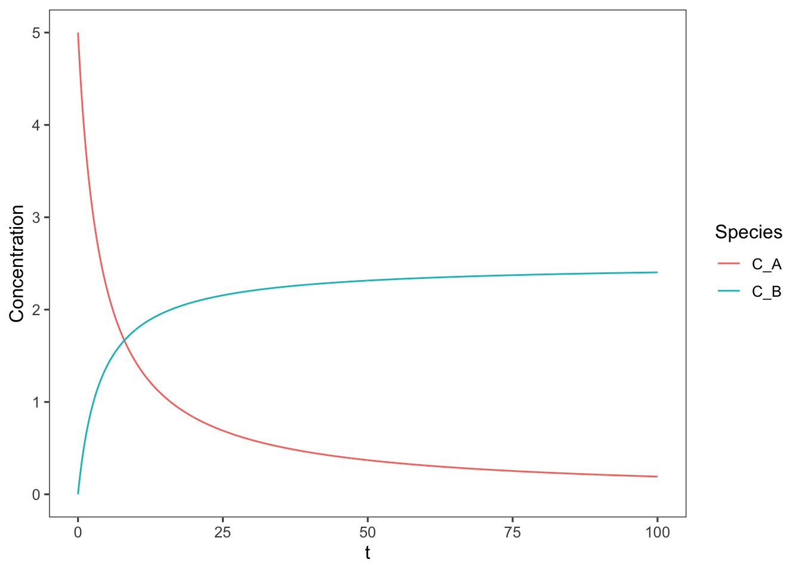

2 Ideal Reactors
Before jumping into more complex kinetics we will first discuss chemical reactors for simple, elementary reactions. This will give us an understanding of what different reaction orders mean and how reversibility affects dynamics. We will also gain and understanding of different chemical reactors and how reactor choice can effect the reaction outcome.
For any reactor we can consider a small control volume \(dV\), and examine the rate of generation of species \(i\) in that control volume: \[G_i = \iiint_V r_idV\] For open systems, e.g. continuous flow reactors we will have some flow rate into and out of this volume element. Remembering your basic material balances: \[\text{Rate In - Rate Out + Rate of Generation = Rate of Accumulation}\] \[F_{i0} - F_i + G_i = \frac{dN_i}{dt}\] Now let’s consider three types of ideal reactors that this generalized control volume could be in.
2.1 Batch Reactors
In most cases, examination of a chemical or biochemical reaction will begin with a small scale batch reactor. An ideal batch reactor is defined as a fixed volume, with no flow in or out, that is well mixed such that concentration and temperature are uniform throughout the volume. The concentration and temperature can vary overtime as the reaction proceeds, but typically some temperature-control mechanism will be applied such that the reactor can be considered isothermal.
For batch reactors \(F_{i0} = F_i = 0\), such that the rate of generation of species \(i\) becomes: \[G_i = \iiint_V r_idV = \frac{dN_i}{dt}\] Since perfect mixing renders \(r_i\) independent of position integration is simple yielding \[r_i =\frac{1}{V} \frac{dN_i}{dt}\] This equation is called the design equation for a batch reactor. We can substitute \(r_i\) for the overall rate equation for any reaction or multiple reactions, and if we can separate the variables dependent on species \(i\) and time, we can solve this equation to yield an expression for the number of moles of species \(i\) versus time.
We can also write this design equation in terms of extent of reaction, as extent of reaction, \(\xi = \Delta N_i / \nu_i\). \[r_i = \frac{\nu_i}{V} \frac{d\xi}{dt}\] Additionally for single reactions it is sometimes useful to write the design equation in terms of the fraction of the limiting reactant, \(l\) that has been consumed, or fractional conversion, \(x_l\).
In this case the design equation is \[-r_l = \frac{N_{l0}}{V} \frac{dx_l}{dt}\] If volume is constant, we can also write any of these equations in terms of concentration as \(C_i = N_i / V\), e.g. \[r_i =\frac{dC_i}{dt}\] If there is a catalyst or enzyme in the reactor we can also replace the volume of the reactor with the mass of the catalyst in the reactor in any of these equations.
Solving these differential equations will provide us with an equation for the amount of species \(i\) in the reactor at any given time during the reaction. This will then allow us to calculate the amount of time or reactor volume necessary to run a reaction to achieve the desired quantity of product.
Let’s do some example calculations.
2.1.1 First Order Reaction Example
Consider a liquid phase reaction \(\require{mhchem}\ce{A -> B}\) that is elementary, therefore the rate equation can be written as \(-r_A = r_B = k_1C_A\). How long must the reactor be run in order for 70% of A to be converted to B if \(k_1 = 0.05 \text{ min}^{-1}\) and \(C_{A0} = 5 \text{ M}\)?
Our goal is to find the time required for 70% of A to be consumed. This indicates that we should set this problem up in terms of fractional conversion or extent of reaction. So our design equation will simplify to \[r_A = \frac{dC_A}{dt} = \frac{d[C_{A0}(1-x_A)]}{dt} = \frac{d(C_{A0}-C_{A0}x_A)}{dt} = 0-C_{A0}\frac{dx_A}{dt}\] \[-r_A = C_{A0}\frac{dX_A}{dt}\]
We know what the rate of consumption of A is since the reaction is elementary, so we can plug this relation in for \(-r_A\), and also write \(C_A\) in terms of fractional conversion, \(C_{A0}(1-x_A)\). \[k_1C_{A0}(1-x_A) = C_{A0} \frac{dx_A}{dt}\] We can then separate variables \[k_1dt = \frac{dx_A}{(1-x_A)}\] and finally integrate \[k_1\int_0^tdt = \int_0^{0.7}\frac{1}{(1-x_A)} dx_A\] to yield \[t = \frac{-[\ln(1-0.7)-\ln(1)]}{k_1}\]
So in this case 24.08 minutes are required to achieve 70% conversion.
What do the dynamics of this reaction look like over time? Let’s solve the general form of the integral to find out. \[k_1\int_0^tdt = \int_0^{x_A}\frac{1}{(1-x_A)} dx_A\] \[t = \frac{-\ln(1-x_A)}{k_1} \] \[e^{-k_1t} = 1-x_A\] \[x_A = 1-e^{-k_1t}\] Now we can plot this relationship.
k_1 <- 0.05
t <- seq(0, 100, 0.1)
x_A <- 1 - exp(-k_1 * t)
require(tidyverse)
require(magrittr)
data <- tibble(t, x_A)
ggplot(data = data, aes(x = t, y = x_A)) + geom_line() +
coord_cartesian(ylim = c(0, 1))As we calculated we would need to run the reaction for ~24 minutes to achieve 70% conversion.
2.1.1.1 ???Questions???
Does the reaction ever reach 100% conversion?
No, it asymptotically approaches it.
What do the concentrations of A and B look like over time?
For this let’s make a stoichiometric table to help us keep everything straight
| Species | Initial Concentration | Concentration at t=t |
|---|---|---|
| A | \(C_{A0}\) | \(C_{A0}(1-x_A)\) |
| B | \(0\) | \(C_{A0}x_A\) |
Now we can add these concentrations to our plot.
C_A0 <- 5 #M
C_A <- C_A0 * (1 - data$x_A)
C_B <- C_A0 * data$x_A
data <- cbind(data, C_A, C_B)
# we could also use a 'pipe' to send data as the
# first argument data %<>% cbind(C_A, C_B) We need
# to tidy this data up a bit Gather the
# Concentration values into a single column and
# create a new key column Species
data %<>% gather(C_A, C_B, key = "Species", value = "Concentration")
ggplot(data = data, aes(x = t, y = Concentration, color = Species)) +
geom_line()2.1.1.2 ???Questions???
What would the above plot look like if the reaction were zero order? E.g. if the reaction was \(\require{mhchem}\ce{ A -> B }\) and the rate equation was \(-r_A = k_1\)
The design equation for a zero order batch reaction simplifies to \(k_1 = C_{A0} \frac{dx_A}{dt}\). Integrating this yields \(x_A = k_1t\). Graphing this equation as above yields
x_A <- k_1 * t
require(tidyverse)
require(magrittr)
data <- tibble(t, x_A)
C_A <- C_A0 * (1 - data$x_A)
C_B <- C_A0 * data$x_A
data <- cbind(data, C_A, C_B)
data %<>% gather(C_A, C_B, key = "Species", value = "Concentration")
ggplot(data = data, aes(x = t, y = Concentration, color = Species)) +
geom_line() + coord_cartesian(ylim = c(0, 5), xlim = c(0,
20))This plot is only valid for the window of time for which \(C_A\) is positive, as concentrations cannot be negative. To truly represent zero order reactions across indefinite times a discontinuous function must be used.
2.1.2 Second-order Reaction Example
2.1.2.1 ???Questions???
What would this plot look like if it were second order? E.g. if the reaction was \(\require{mhchem}\ce{ 2A -> B }\) and the rate equation was \(-r_A = k_1C_A^2\)
In this case the design equation simplifies to \[k_1C_{A0}(1-x_A)^2 = \frac{dx_A}{dt}$ \]0^tk_1C{A0}dt = 0^{x_A}\[ \]k_1C{A0}t = - 1\[ \] 1 - x_A = \[ \] x_A = 1 - $$ Graphing this equation as above yields
x_A <- 1 - 1/(k_1 * C_A0 * t + 1)
require(tidyverse)
require(magrittr)
data <- tibble(t, x_A)
C_A <- C_A0 * (1 - data$x_A)
C_B <- C_A0 * data$x_A/2
data <- cbind(data, C_A, C_B)
data %<>% gather(C_A, C_B, key = "Species", value = "Concentration")
ggplot(data = data, aes(x = t, y = Concentration, color = Species)) +
geom_line()
2.1.3 Reversible first-order reaction example
What about if this were first-order and reversible? \[\require{mhchem}\ce{ A <=> B }\] \[-r_A = k_fC_A - k_rC_B\] Because reversible reactions are actually multiple reactions we cannot use fractional conversion or extent of reaction to measure this reaction, we will just use concentrations.
Let’s make a stoichiometric table to start in terms of reactant A.
| Species | Initial Concentration | Concentration at t=t |
|---|---|---|
| A | \(C_{A0}\) | \(C_A\) |
| B | \(0\) | \(C_{A0}-C_A\) |
Now we can rewrite the rate equation based on this table. \[-r_A = k_fC_A - k_r(C_{A0}-C_A)\] And so the design equation (material balance) is \[\frac{dC_A}{dt} = k_fC_A - k_r(C_{A0}-C_A)\] \[\int_0^{C_A}\frac{dC_A}{(k_f + k_r)C_A - k_rC_{A0}} = \int_0^tdt \] Integrating and solving for \(C_A\) we get: \[C_A = \frac{k_fC_{A0}e^{-(k_f+k_r)t} + C_{A0}k_r}{k_f+k_r}\] Now we can plot this assuming the same conditions (\(k_f = 0.05\text{ min}^{-1}\) and \(C_{A0} = 5\text{ M}\)) as above, and we can vary the ratio of \(k_f/k_r\).
C_A0 <- 5 #M
k_f <- 0.05 #min
kf_kr <- c(10, 1, 0.1)
k_r <- k_f/kf_kr
require(tidyverse)
require(magrittr)
# now we are going to need to apply our C_A
# calculation over each of the k_r values to do
# this we will make C_A a function
C_A <- function(k_f, C_A0, k_r, t) {
(k_f * C_A0 * exp(-(k_f + k_r) * t) + C_A0 * k_r)/(k_f +
k_r)
}
# and make a table of all combinations of times and
# k_r's
data <- crossing(k_r, t)
data %<>% add_column(k_f, C_A0, .before = TRUE)
# now apply this function over all values of k_r
# and t
data %<>% mutate(C_A = unlist(pmap(., C_A)))
data$C_B <- C_A0 - data$C_A
data %<>% gather(C_A, C_B, key = "Species", value = "Concentration")
data$kf_kr <- data$k_f/data$k_r
ggplot(data = data, aes(x = t, y = Concentration, color = Species,
linetype = as.factor(kf_kr))) + geom_line()
2.2 Continuous-stirred tank reactors
Continuous-stirred tank reactors, or CSTRs, are just like batch reactors except with continuous feed and effluent streams. Ideal mixing is still in effect equalizing temperature and concentration across the contents of the reactor. So to adapt the general equations for a CSTR we simply keep all terms: \[F_{i0} - F_i + r_iV = \frac{dN_i}{dt}\] If assumptions such as constant volume or a single reaction are valid we can similarly simplify this equation to be in terms of concentrations or fractional conversion and extent of reaction, respectively. It is always best to start with the general design equation and walk through each assumption to simplify it, instead of jumping straight to a simplified version without fully assessing each assumption.
For CSTRs the rates of reaction are defined at the effluent conditions, which because of perfect mixing are equivalent to the reaction conditions in the entire reactor.
For continuous flow reactors we need to define a quantity that reflects how long the reactants spend in the reactor. Most often a quantity called space time is used. Space time is related to the average time that any unit fluid spends in the reactor. Space time at inlet conditions is defined as \[\tau_0 = V/v_0\] where \(v_0\) is the inlet volumetric flowrate.
Space time provides an analagous metric to real time in a batch reactor. If a batch reaction is run for a longer time more reactants will be converted to product, and if a continuous reactor is run at higher space time, more reactants will be converted to product in the effluent.
As \(F_{i0} = C_{i0}v_0\), for constant volume reactions, that is when fluid density is constant throughout the reaction, the design equation can be written in terms of space time \[\tau_0 = \frac{C_{i0}x_i}{r_i}\] Also analagous to batch reactors, catalyst or enzyme weight can also be swapped for reactor volume in the CSTR design equations and definitions of space time. In these cases the catalysts or enzymes are often immobilized on polymeric beads that can easily be filtered from the effluent stream.
2.3 Plug-flow reactors
Alternatively enzyme loaded beads could be packed into a porous bed and reactants could be flowed through this bed. This type of reactor is called a plug-flow reactor. However there does not have to be a packed bed in the reactor at all, you can imagine a pipe with fluid flowing through it and a reaction occuring in that fluid. The further along the length of the pipe the fluid is, the further along the reaction is within that fluid. You might have intuited from that last statement that unlike in batch and continuous stirred tank reactors, in plug-flow reactors the reaction rate varies with position
In order to be an ideal plug flow reactor, two assumptions must be met. 1. There is no mixing in the direction of flow. We can imagine this as little discs or “plugs” of fluid moving through the reactor in a single file line, like miniature batch reactors moving through the reactor. 2. There is no variation in temperature or concentration normal to the direction of flow. I.e. each of the plugs is uniform.
For a real reactor to approximate an ideal reactor, the flow must be highly turbulent.
For a plug flow reactor (PFR) our material balance simplifies to \[F_{i0} - F_i + \iiint_V r_i dV = 0\] As we said before \(r_i\) varies along the length of the reactor and therefore we need to come up with a strategy to solve this integral.
One strategy is to choose a control volume \(dV\) such that \(r_i\) does not vary within \(dV\). So according to our definition of an ideal plug-flow reactor, each “plug” would be a perfect control volume becasue the concentration and therefore rate of reaction are uniform across this volume perpendicular to flow. Rewriting our material balance across this control volume: \[F_i - (F_i + dF_i) + r_i dV = 0\] So our design equation for a PFR is \[dV = \frac{dF_i}{r_i}\]
Just as with CSTRs, we can define PFRs in terms of space time and concentration. \[d\tau_0 = C_{A0} \frac{dx_A}{-r_A}\]
2.4 Desigining continuous flow reactors
When designing continuous chemical and biochemical reactors we are concerned with the volume of the reactor and flow rate required to meet our production goals. Frequently, a visual representation of the reaction is used to aid in these design decisions for continuous reactors. To derive this visual representation we examine the design equations for a CSTR and PFR. \[\text{CSTR: } \frac{V}{F_{A0}} = \frac{x_{A}}{-r_A} \] \[\text{PFR: } \frac{V}{F_{A0}} = \int_0^{x_A}\frac{dx_{A}}{-r_A} \] Now if we plot \(1/(-r_A)\) vs \(x_A\), the ratio of the reactor volume to the flow rate for a CSTR is the rectangle where the desired fractional conversion intersects the reaction rate. For a first-order, constant volume, isothermal reaction, this looks like the following:
k_1 <- 0.05
C_A0 <- 5 #M
t <- seq(0, 100, 0.1)
x_A <- 1 - exp(-k_1 * t)
require(tidyverse)
require(magrittr)
data <- tibble(t, x_A)
data$nr_A <- k_1 * (C_A0) * (1 - data$x_A)
ggplot(data = data, aes(x = x_A, y = 1/nr_A)) + geom_line() +
annotate(geom = "rect", xmin = 0, xmax = 0.9, ymin = 0,
ymax = 1/data$nr_A[min(which(round(data$x_A,
3) == 0.9))], alpha = 0.5)The shaded area in this plot represents the size, \(V\) to flow rate \(F_{A0}\) ratio of the CSTR required to achieve 90% conversion. For reference, because thinking in terms of the inverse of the rate is tricky, here is what a plot of the rate equation looks like, \(-r_A\) vs. \(x_A\):
Looking at the PFR equation we can see that instead of a rectangle the \(V/F_{A0}\) ratio is represented by the area under the curve.
ggplot(data = data, aes(x = x_A, y = 1/nr_A)) + geom_line() +
annotate(geom = "rect", xmin = 0, xmax = 0.9, ymin = 0,
ymax = 1/data$nr_A[min(which(round(data$x_A,
3) == 0.9))], alpha = 0.5) + geom_area(mapping = aes(x = ifelse(x_A >=
0 & x_A <= 0.9, x_A, 0)), fill = "red", alpha = 0.5) +
ylim(c(0, 600))So given a constant flowrate between the two a PFR reactor will be significantly smaller than a CSTR for the same reaction.
2.4.0.1 ???Questions???
Explain qualitatively why a CSTR needs a larger volume to achieve the same conversion? Hint: what is the average reaction rate in a CSTR vs a PFR?
In a CSTR the reaction rate is always constant as the entire volume is always well mixed. As soon as reactants enter the reactor they are diluted to the effluent conditions, which determine the reaction rate throughout the whole reactor. This dilution does not happen In a PFR, so reactants can enter the reactor at a much higher concentration and therefore the reaction can occur at a much higher initial rate. As the reactants move through the reactor they gradually approach the concentration at which the same reaction would be conducted in a CSTR, finally reaching this concentration as the reach the end of the reactor.